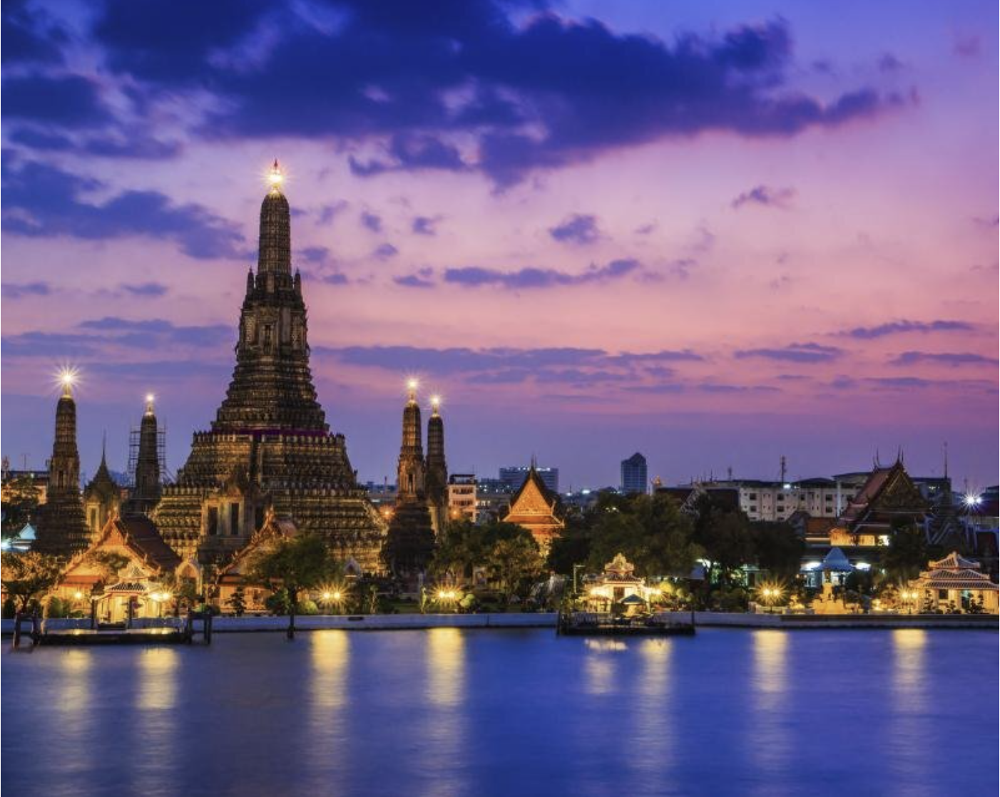
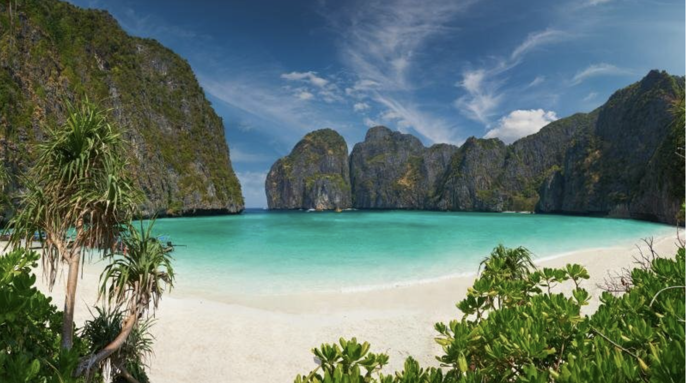
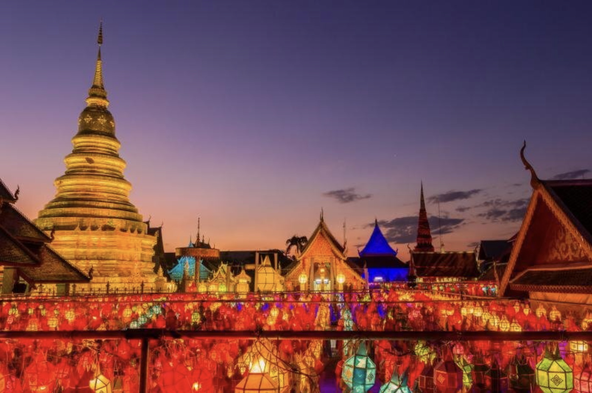
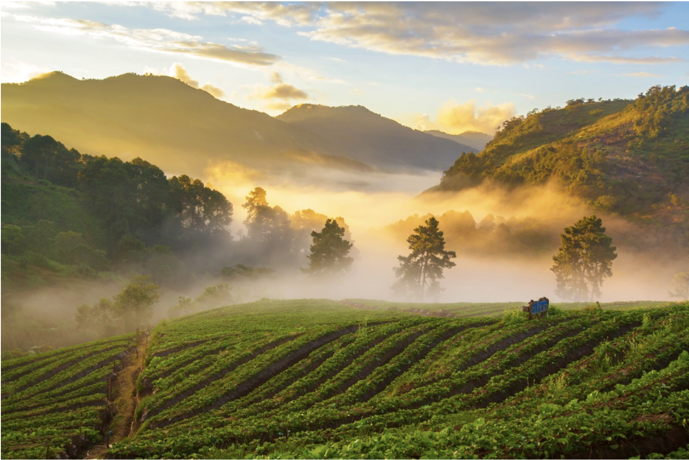

Thailnad Travel
태국의 볼거리
방콕

태국의 수도 방콕은 세계 배낭여행의 중심지이자 인구 천만 명이 넘는 대도시로 태국의 정치, 경제, 문화의 중심지입니다. 다양한 볼거리와 먹거리, 그리고 착한 가격으로 여행객들의 오감을 만족하게 하는 방콕. 저렴한 가격의 고퀄리티 호텔이 많아 호캉스하기에도 좋습니다. 게다가 붐비는 거리 속을 누비는 툭툭, 휘황찬란한 쇼핑몰과 그사이에 위치한 낡고 허름한 건물들, 에너지가 넘치는 바들과 반짝이는 마천루 등 방콕은 언제 들러도 새롭고 볼거리가 무궁무진합니다. 만약 복잡함 속에서 벗어나고 싶다면 오렌지색 법복을 입은 승려들이 명상하고 있는 왓트(사원)를 찾아 봅시다.
푸켓

푸켓은 태국에서 가장 큰 섬이자 방콕만큼이나 태국을 대표하는 관광지입니다. 안다만의 진주로 불리기도 하는 푸켓은 세계적인 휴양지답게 아름다운 해안선과 고운 백사장, 석회암 절벽, 우거진 숲이 자리하고 있습니다. 주요 해변은 빠똥, 까론, 까따 비치로 접근성이 좋고 길게 뻗은 화이트 샌드가 매력적입니다. 해변마다 고급 리조트와 마사지, 바 등 시설들이 들어서 있어 휴식과 여흥을 함께 즐기기에는 최상입니다. 이 외에도 아오산 비치, 씨암 비치 등 조용하고 한적한 해변들이 많이 있습니다. 만약 관광 인파들에게서 떨어져 개인적인 시간을 보내고 싶다면 보트를 타고 코랑야이, 코해로 가보길 추천합니다.
치앙마이

태국 제2의 도시 치앙마이는 때 묻지 않은 아름다운 자연과 고유의 문화가 조화를 이뤄 흔히 ‘북방의 장미’라 불립니다. 풍부한 문화유산과 화려한 축제, 뛰어난 수공예품, 그리고 고산족들의 생활상을 엿볼 수 있는 이곳은 해발고도가 310m로 다른 도시들보다 서늘한 날씨를 자랑합니다. 태초의 모습을 그대로 간직한 국립공원을 비롯해 수많은 산과 정글 등지에서도 여행자들은 다양한 경험을 즐길 수 있습니다. 또한 치앙마이에 가면 현지인이 직접 알려주는 타이푸드 쿠킹클래스에 참여해봅시다. 세계 각국의 사람들과 태국의 대표 음식인 팟타이, 그린커리, 망고밥 등을 배울 수 있습니다.
마사지

끄라비는 푸켓의 남서쪽에 끝자락에 위치한 130여 개 이상의 섬들을 아우르는 지역입니다. 끄라비의 대표 풍경은 투명하고 아름다운 바다와 해변에 기괴한 모습으로 서 있는 석회절벽들! 휴양을 위해 오는 사람들도 많지만 지역의 특성상 암벽 클라이밍을 즐기러 오는 여행객들도 많습니다. 끄라비의 대표 여행지로는 코란타, 코피피, 라일레이, 아오낭 등이 있으며 4개의 섬을 돌며 스노클링을 즐기는 투어부터 프라낭 해변에서의 암벽등반, 카야킹 등 다양한 액티비티를 즐길 수 있습니다. 생태계 복구를 위해 피피섬 마야베이는 무기한 폐쇄되었으니 여행 계획에 참고하먼 좋습니다.